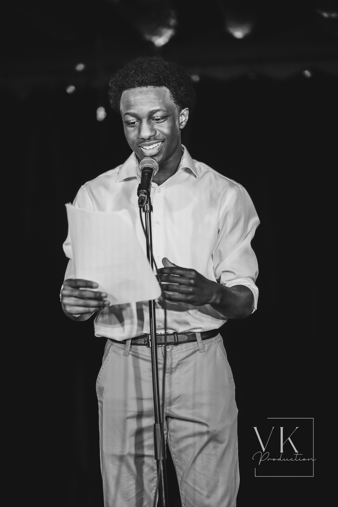

Hi, I'm Fodé Saïdou Doumbouya, a passionate creator with a deep love for music, digital art, and reading. I'm currently focused on expanding my skills in UI & UX design, graphic design, and programming, with the goal of becoming a versatile web designer. I’m driven by a curiosity for both aesthetics and functionality, and I aim to blend these elements to create seamless, intuitive, and visually compelling digital experiences.
Feel free to explore my portfolio or learn more about me in the About Me section.
Hi! I'm Fodé Saïdou Doumbouya, a passionate creator with a deep love for music, digital art, and reading. I'm currently focused on expanding my skills in UI & UX design, graphic design, and programming, with the goal of becoming a versatile web designer. I’m driven by a curiosity for both aesthetics and functionality, and I aim to blend these elements to create seamless, intuitive, and visually compelling digital experiences.
Whether I’m exploring the latest design trends or diving into new coding techniques, I’m always looking for ways to push my creative boundaries. I enjoy experimenting with innovative design concepts and constantly refining my craft to bring fresh ideas to life. My passion lies in crafting digital experiences that are not only beautiful but also user-friendly and functional.
As part of a brand overhaul for Art of Sport, I took on the challenge of redesigning the logo and developing a fresh branding and marketing strategy. The goal was to give the brand more personality and differentiation from its competitors. Through strategic design choices, I crafted a new visual identity that resonates with a younger, more diverse audience, enhancing the brand’s emotional connection with consumers.
See the full projectIn collaboration with a talented group of designers, I helped conceptualize and design a streaming platform exclusively for independent filmmakers. This app was created to address the challenges faced by indie filmmakers, providing them with a dedicated space to showcase their work and compete against mainstream media.
See the full projectWorking with a talented team of designers and filmmakers, I contributed to the production of a documentary about a local ice cream shop. This project gave me the opportunity to learn the intricacies of film direction, editing, and production.
See the full projectIf you would like to get in touch with me, feel free to send an email to fdoumbou@uwaterloo.ca